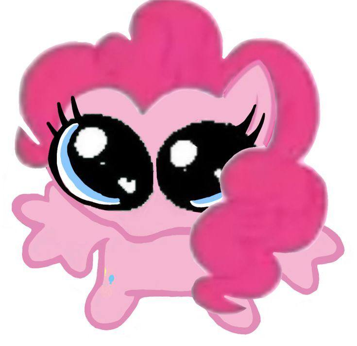
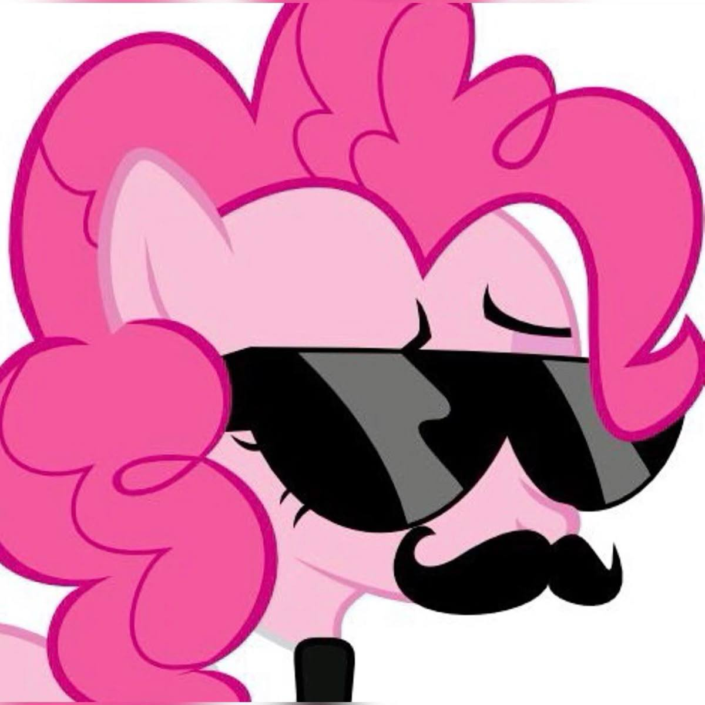
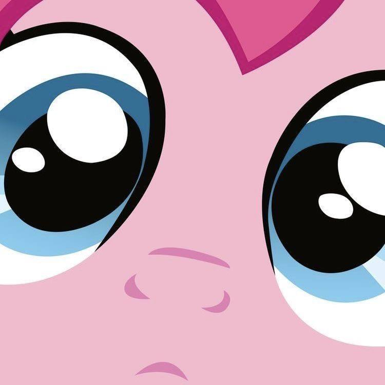
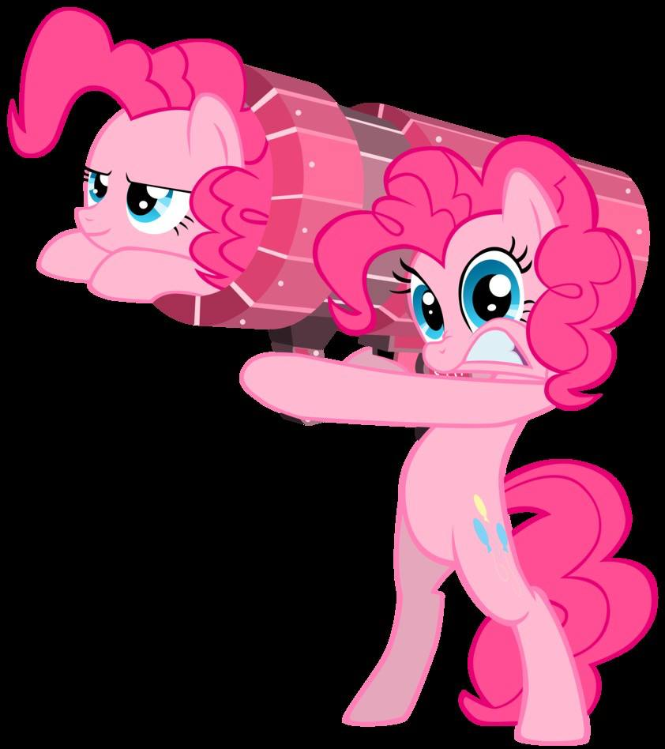

Пинки Пай, полное имя Пинкамена Дайан Пай - одна из главных героинь My Little Pony Friendship is Magic. Она энергичная и общительная пекарь в Sugarcube Corner, где живет на втором этаже со своим беззубым домашним крокодилом Гамми, и она олицетворяет элемент радости. Пинки пишет и исполняет множество песен, а также является источником многих комичных ситуаций в сериале. В некоторых сувенирах её называют Понка По.
В «Хрониках Понивилля» Пинки Пай рассказывает о том, как она росла на каменной ферме вместе со своими сёстрами Лаймстоун Пай и Марбл Пай и родителями Игнеус Рок Пай и Клаудиа Кварц. Её третья сестра, Мод Пай, впервые упоминается в главной книге «Пинки Пай и рок-вечеринка Понипалуза!» и появляется в эпизодах «Гордость Пинки», «Мод Пай» и «Разрушители».
В «Гордости Пинки» Сэндвич Чиз рассказывает, что решил стать организатором вечеринок после того, как посетил вечеринку, устроенную Пинки вскоре после того, как она получила свой знак отличия.
Пинки исследует возможную связь с семьёй Эппл в «Эпплджек Пай» ;Пинки, хотя в конце концов правда остаётся неясной. В финале сериала «Последняя проблема» Пинки Пай выходит замуж за Сэндвич Чиза и в будущем у них рождается сын по имени Малыш Чиза.

По словам Пинки, однажды, работая на ферме, она увидела радугу, появившуюся после взрыва, и испытала внезапную безмерную радость. Желая поделиться этим чувством с другими, она устроила вечеринку в силосной яме на ферме и пригласила туда свою семью. Их первоначальное удивление сменилось восторгом, и пока семья праздновала, на боку Пинки появился знак отличия.
Пинки гиперактивна, возбудима, общительна и эксцентрична, часто говорит и поступает нелогично. Как поётся в песне про улыбку, она любит дружить с другими пони и делать их счастливыми, например, с Твайлайт Спаркл в «Дружба — это чудо», часть 1 и Крэнки Дудлом Осликом в «Настоящий друг». С этой целью Пинки часто устраивает вечеринки по всему городу по разным поводам.
Пинки склонна вести себя беззаботно даже в серьёзных ситуациях, например, она делает паузу, чтобы выпить шоколадное молоко, в тот момент, когда главные герои противостоят Дискорду в «Возвращении Гармонии. Часть 2». В других случаях она слишком остро реагирует на обыденные обстоятельства, например, предполагает, что Рейнбоу Дэш не вспомнит о своих друзьях, когда они наведут её в Академии Чудо-Молний. В результате остальные Шесть Мане иногда пренебрежительно относятся к Пинки или критикуют её поведение. В Рое века друзья разочаровываются в её попытках собрать инструменты, но позже узнают, что парапризраков можно увести с помощью музыки.
Пинки гиперактивна, возбудима, общительна и эксцентрична, часто говорит и поступает нелогично. Как поётся в песне про улыбку, она любит дружить с другими пони и делать их счастливыми, например, с Твайлайт Спаркл в «Дружба — это чудо», часть 1 и Крэнки Дудлом Осликом в «Настоящий друг». С этой целью Пинки часто устраивает вечеринки по всему городу по разным поводам.

Пинки склонна вести себя беззаботно даже в серьёзных ситуациях, например, она делает паузу, чтобы выпить шоколадное молоко, в тот момент, когда главные герои противостоят Дискорду в «Возвращении Гармонии. Часть 2». В других случаях она слишком остро реагирует на обыденные обстоятельства, например, предполагает, что Рейнбоу Дэш не вспомнит о своих друзьях, когда они наведут её в Академии Чудо-Молний. В результате остальные Шесть Мане иногда пренебрежительно относятся к Пинки или критикуют её поведение. В Рое века друзья разочаровываются в её попытках собрать инструменты, но позже узнают, что парапризраков можно увести с помощью музыки.
Пинки часто проделывает мультяшные трюки, такие как движения, противоречащие законам физики, неожиданные ходы и появление в кадре под невероятными углами. Она непрактично играет сразу на десяти инструментах, чтобы отвлечь параспрайтов в «Рое века» и ввести в заблуждение Трикси в Магической дуэли. Иногда способности Пинки взаимодействуют с «обычными» персонажами, например, когда она выдувает большой пузырь, из-за которого голова Сумеречной Искорки увеличивается в MMMystery on the Friendship Express, или когда она использует свои копытца, чтобы заставить Крэнки Дудла Ослика широко улыбнуться в A Friend in Deed, но его вытянутые губы тут же снова хмурятся.

Пинки иногда ломает четвёртую стену и демонстрирует понимание кинематографических приёмов. В конце Over a Barrel она просовывает голову в протирание радужки, чтобы прокомментировать урок дружбы Твайлайт, а в «Волшебной дуэли» она широко раздвигает протёртую радужку и забирается на чёрный экран, требуя вернуть ей рот. В Заводи новых друзей, но не забывай о Дискорд Пинки так радуется тому, что Дискорд покупает все торты в пекарне, что трясёт камеру. Она говорит принцессе Кейденс, ч то сохранить их с Сияющим Доспехом секрет было «проще простого» в конце эпизода, в котором Пинки Пай всё знает, хотя, когда камера приближается к ней, Пинки качает головой прямо перед зрителями.
Пинки Пай — талантливая и энергичная организаторша вечеринок. Она заработала свой знак отличия, устроив вечеринку для своей семьи. При первой встрече с Твайлайт Спаркл в «Дружба — это чудо», часть 1 Пинки приглашает всех жителей города на вечеринку-сюрприз в честь Твайлайт в библиотеке «Золотой дуб», чтобы у Твайлайт было «много-много друзей». В Griffon the Brush Off после того, как Гильда начала задирать пони на городской площади Понивилля, Пинки устраивает вечеринку в её честь в надежде, что это улучшит её отношение к пони.
В Гордости ПинкиСэндвич с сыром вызывает Пинки на соревнование «Дурачьё», чтобы определить, кто будет устраивать вечеринку в честь дня рождения Рэйнбоу Дэш. В Вечеринке не задалось друзья Пинки случайно обнаруживают, что у неё в подвале Уголка Сахарок есть секретная пещера для планирования вечеринок, где она делает заметки о том, какие вечеринки нравятся каждому из них, и планирует вечеринки на годы вперёд.

Имя отца Пинки Пай, Игниус Рок Пай было указано в 20 серии 5 сезона и упоминается в книге «Pinkie Pie and the Rockin» Ponypalooza Party!» и в нескольких товарах.. Его первое появление было в воспоминаниях Пинки Пай в серии «История знаков отличия», а позже в серии «Магическая дуэль» как фоновый пони, давая Трикси работу на каменной ферме. После он появился в 20 серии 5 сезона, на день согревающего очага, которое семья Пай проводила вместе с семьей Эппл. Так же он упомянул, что он сын Фэлспора Гранита Пая, то есть дедушки Пинки Пай.
Мать Пинки Пай Клауди Кварц, также упоминается в книге «Pinkie Pie and the Rockin» Ponypalooza Party!» Назвалась Клауди Кварц, когда представлялась перед Эпплами в 20 серии 5 сезона.
У Пинки Пай есть три сестры, две из которых впервые были показаны в серии «История знаков отличия» как молодые кобылки. Их имена, Марбл Пай и Лаймстоун Пай, указаны в книге «Pinkie Pie and the Rockin» Ponypalooza Party!».
Третья сестра Пинки, Мод Пай, также упоминалась в книге, но в сериале её первое появление как кобылки было в Гордость Пинки, а позже, она появляется в специально посвященной ей серии. Там она показана специалистом по камням.
В серии «Разбивающие сердца» Лаймстоун Пай показана довольно агрессивной, судя по тому, что она вечно защищает огромный камень, названный Хозяйским валуном. Марбл Пай является робкой и всегда хочет что-то сказать, но говорит только «Мм-гм» (подобно «Агась» Большого Маки). Ник Конфалоне сообщил, что по возрасту от самой старшей до самой младшей сестры пони располагаются в таком порядке: Лаймстоун, Мод, Пинки и Марбл.